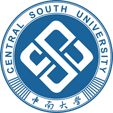

中南前端

我们是来自中南大学的一群热爱前端的小伙伴。
中南大学位于湖南省长沙市，主校区位于岳麓山南麓。现为教育部直属国家重点综合性大学，是首批进入国家“211工程”、“985工程”重点建设的高校。其前身为中南医科大学、长沙铁道学院与中南工业大学三校，中南大学于2000年4月由该三校合并而成。 中南大学学科涵盖哲学、经济学、法学、教育学、文学、历史学、理学、工学、农学、医学、管理学、艺术学等十二大门类，以工学和医学见长；拥有6个一级学科国家重点学科（涵盖二级学科21个），12个二级学科国家重点学科，1和个国家重点（培育）学科；学校下设31个二级学院，有本科专业97个；是内地56所设有研究生院大学之一，拥有博士学位授权一级学科33个，二级学科192个，硕士学位授权学科308个；有博士后科研流动站32个。 中南大学拥有2个国家协同创新中心、3个国家重点实验室、4个国家工程研究中心、4个国家工程实验室、2个国家工程技术研究中心、2个国家临床医学研究中心和1个国防科技重点实验室；有4个国家级创新群体、1个国家级大学科技园、5个国家级人才培养基地和课程教学基地；现有中国科学院院士2人，中国工程院院士15人，博士生导师805人，教授及其他正高职称人员944人，副教授及其他副高职称人员1708人。现有全日制在校学生5万多名，来自全国31个省市和世界30多个国家与地区。 中南大学现占地面积323万平方米，学校产权建筑面积161万平方米，教学科研等仪器设备总值近6.7亿元；图书馆建筑面积4.2万平方米，总藏纸质图书454.24万册，并已实现信息数字化和管理自动化。2005年规划建立新校区，规划用地140.56公顷，规划建筑面积82.4988万平方米，并已于2009年投入使用。
我们爱中南！
中南大学位于湖南省长沙市，主校区位于岳麓山南麓。现为教育部直属国家重点综合性大学，是首批进入国家“211工程”、“985工程”重点建设的高校。其前身为中南医科大学、长沙铁道学院与中南工业大学三校，中南大学于2000年4月由该三校合并而成。 中南大学学科涵盖哲学、经济学、法学、教育学、文学、历史学、理学、工学、农学、医学、管理学、艺术学等十二大门类，以工学和医学见长；拥有6个一级学科国家重点学科（涵盖二级学科21个），12个二级学科国家重点学科，1和个国家重点（培育）学科；学校下设31个二级学院，有本科专业97个；是内地56所设有研究生院大学之一，拥有博士学位授权一级学科33个，二级学科192个，硕士学位授权学科308个；有博士后科研流动站32个。 中南大学拥有2个国家协同创新中心、3个国家重点实验室、4个国家工程研究中心、4个国家工程实验室、2个国家工程技术研究中心、2个国家临床医学研究中心和1个国防科技重点实验室；有4个国家级创新群体、1个国家级大学科技园、5个国家级人才培养基地和课程教学基地；现有中国科学院院士2人，中国工程院院士15人，博士生导师805人，教授及其他正高职称人员944人，副教授及其他副高职称人员1708人。现有全日制在校学生5万多名，来自全国31个省市和世界30多个国家与地区。 中南大学现占地面积323万平方米，学校产权建筑面积161万平方米，教学科研等仪器设备总值近6.7亿元；图书馆建筑面积4.2万平方米，总藏纸质图书454.24万册，并已实现信息数字化和管理自动化。2005年规划建立新校区，规划用地140.56公顷，规划建筑面积82.4988万平方米，并已于2009年投入使用。
我们爱中南！